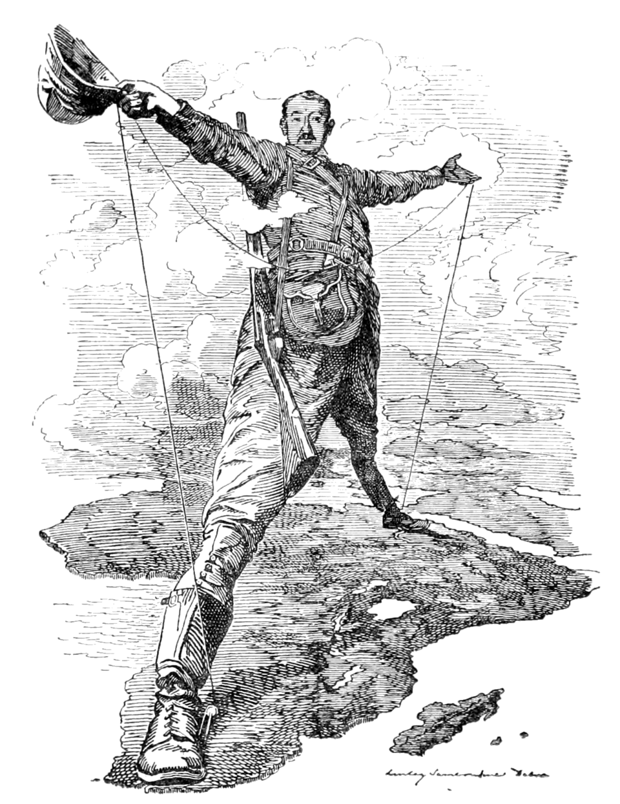
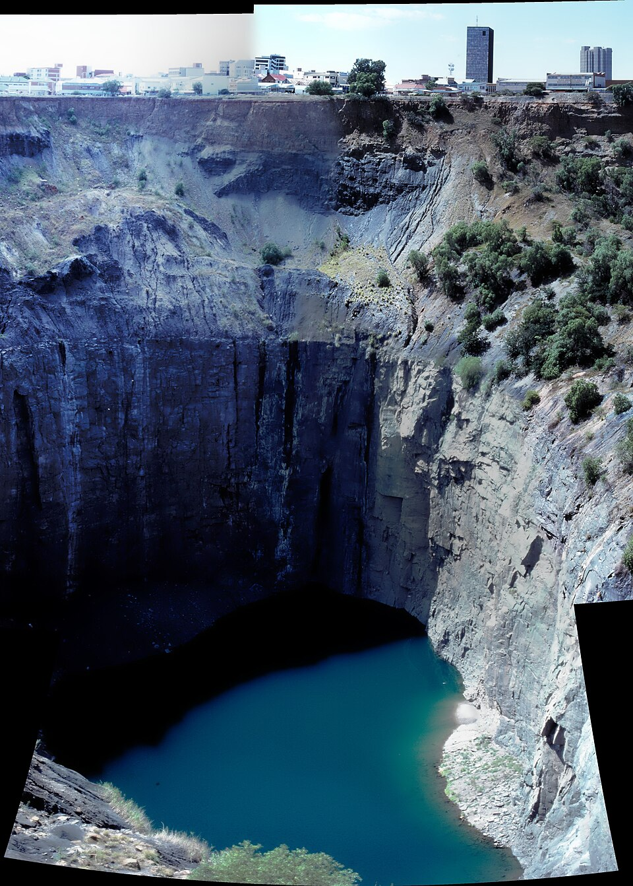
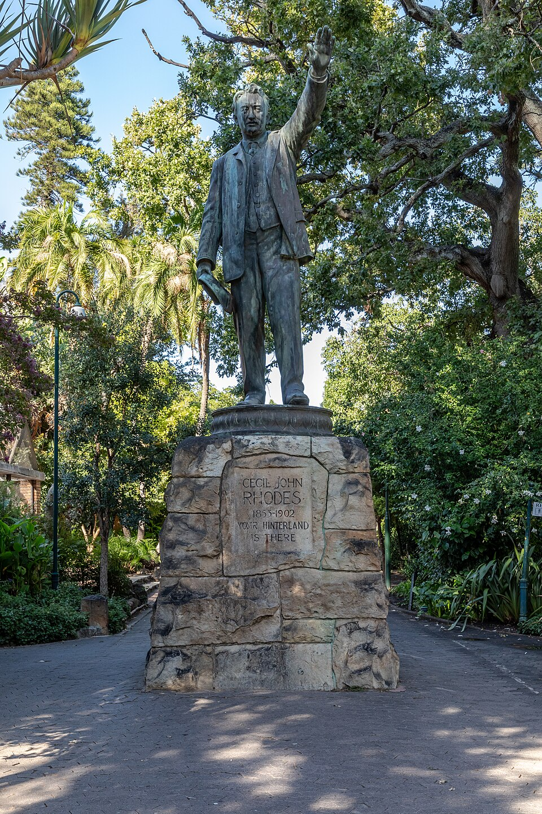

⏱️ 10초 카드 · 제국주의 절정 (1853~1902)
다이아몬드드비어스케이프→카이로로디지아Rhodes Must Fall
여는 질문 — '나쁜 돈으로 만든 좋은 것(장학금)'은 어떻게 평가해야 할까?
이름
한국어세실 로즈
원어Cecil John Rhodes
실제 발음세실 로즈
로마자Cecil Rhodes
영어권Cecil Rhodes
왜 이 사람인가
제국주의를 한 사람으로 압축하면 로즈예요. 돈→권력→영토로 이어지는 야심, 자기 이름을 딴 나라(로디지아), 그리고 100년 뒤에도 이어지는 동상 철거 논쟁까지 — '그때는 다 그랬다'로 덮을 수 없는 이유를 한눈에 보여 줘요.
생애
몸이 약해 요양차 남아프리카로 건너간 목사의 아들이, 다이아몬드 광산 사업으로 세계적 부자가 됐어요. 그가 세운 회사(드비어스)는 한때 세계 다이아몬드의 대부분을 손에 쥐었죠. 돈을 발판으로 케이프 식민지 총리(1890~96)까지 올랐어요.
'아프리카 지도를 영국 색으로, 카이로에서 케이프타운까지'가 그의 꿈이었어요. 군대와 회사를 앞세워 아프리카인들의 땅을 차지하고 자기 이름을 딴 '로디지아'(지금의 짐바브웨·잠비아)를 만들었죠. 1892년 풍자화 '로즈의 거인'은 그 야심을 그린 거예요.
이웃 나라를 뒤엎으려던 음모(제임슨 침공, 1895)가 실패하며 총리에서 물러났고, 보어 전쟁 중에 49세로 죽었어요. 유언으로 만든 '로즈 장학금'은 지금도 세계적 장학금이지만, 그의 동상을 둘러싼 철거 논쟁(Rhodes Must Fall)도 지금까지 이어지고 있어요.
자료로 보기 — 유묵·사진



남긴 말
“할 수만 있다면, 나는 행성들도 합병하고 싶다.”
그의 끝없는 영토 욕심을 보여 주는 유명한 말 — 농담 같지만 진심이었어요. · 출처: 전해지는 말(attributed)
“나는 우리가 세계 최고의 인종이며, 우리가 세계를 더 많이 차지할수록 인류에게 이롭다고 믿는다.”
그의 인종 우월 신념을 날것으로 드러내는 말 — 오늘날엔 비판적으로 읽어야 할, 그러나 가리지 말아야 할 기록이에요. · 출처: 로즈의 '신앙 고백'(Confession of Faith, 1877)
연표
- 1853출생 (영국 하트퍼드셔)
- 1888드비어스 설립 — 다이아몬드 독점
- 1890케이프 식민지 총리 취임
- 1895제임슨 침공 실패 → 총리 사임
- 1902보어 전쟁 중 사망 · 로즈 장학금 유언
케이프에서 로디지아까지 — 야심의 지도
영국 시골에서 태어난 소년이 다이아몬드와 군대를 발판으로 아프리카 남부를 휘저은 경로예요.
현재 지도 위 표시예요. 그가 '로디지아'라 부른 땅은 오늘날의 짐바브웨·잠비아로, 이미 그 이름을 버렸어요.
빛과 그림자사업 수완과 장학금이라는 빛 뒤에, 아프리카인의 땅과 투표권을 빼앗은 법과 노골적인 인종 우월 신념이 있어요. '시대가 그랬다'로 덮기엔 그 시대 안에서도 그는 유난히 앞장섰던 사람 — 동상 철거 논쟁이 지금도 뜨거운 이유예요.
더 깊이 (고등·일반)
다이아몬드와 드비어스
몸이 약해 요양차 남아프리카로 건너간 목사의 아들은, 킴벌리 다이아몬드 광산에서 사업을 키웠어요. 그가 세운 드비어스(De Beers)는 한때 세계 다이아몬드의 대부분을 손에 쥔 거대 독점 기업이 됐죠. 돈이 모든 것의 발판이었어요.
'케이프에서 카이로까지'
아프리카 남쪽 끝(케이프타운)부터 북쪽 끝(카이로)까지를 영국 영토로 잇겠다는 게 그의 꿈이었어요. 1892년 풍자화 '로즈의 거인(Rhodes Colossus)'은 두 도시에 발을 디딘 거인으로 그 야심을 비꼬았죠.
로디지아 — 한 회사가 만든 나라
그는 자신의 회사(영국남아프리카회사) 군대를 앞세워 원주민의 땅을 차지하고, 자기 이름을 딴 '로디지아'(지금의 짐바브웨·잠비아)를 만들었어요. 그 과정에서 아프리카인의 토지와 투표권이 법으로 박탈됐죠.
제임슨 침공과 몰락
이웃 보어인 공화국을 뒤엎으려던 음모(제임슨 침공, 1895)가 실패하면서 케이프 총리에서 물러났어요. 그리고 보어 전쟁이 한창이던 1902년, 49세로 세상을 떠났죠.
로즈 장학금과 'Rhodes Must Fall'
그는 유언으로 세계적인 '로즈 장학금'을 만들었어요. 하지만 2015년 남아프리카·옥스퍼드에서 시작된 'Rhodes Must Fall(로즈는 무너져야 한다)' 운동은 그의 동상 철거를 요구했죠. 한 사람의 유산을 어떻게 기억할지 — 지금도 뜨거운 질문이에요.
사람의 그물 — 함께 읽을 인물
더 공부하기 — 여기서 출발하세요
📚 책으로
- 아프리카 분할사 — 백인의 쟁탈전 ↗'케이프-카이로'와 베를린 회담의 큰 그림.
- 다이아몬드의 역사 ↗드비어스 독점이 만든 보석 신화의 이면.
📜 1차 사료
- 세실 로즈의 '신앙 고백'(1877) ↗그의 제국주의·인종관을 본인 글로 확인하는 사료(비판적 독해 필요).
🎬 영상으로
- 다큐 — 세실 로즈와 제국주의 ↗ · The People Profiles케이프 식민지·로디지아로 이어진 그의 제국주의를 다룬 영어 다큐.
📍 가 볼 곳
- 로즈 기념비 (케이프타운, 데빌스 피크)그를 기리는 신전풍 기념물.
- 마토포 언덕의 무덤 (짐바브웨)그가 묻힌 곳.
- 옥스퍼드 오리엘 칼리지동상 철거 논쟁(Rhodes Must Fall)의 현장.